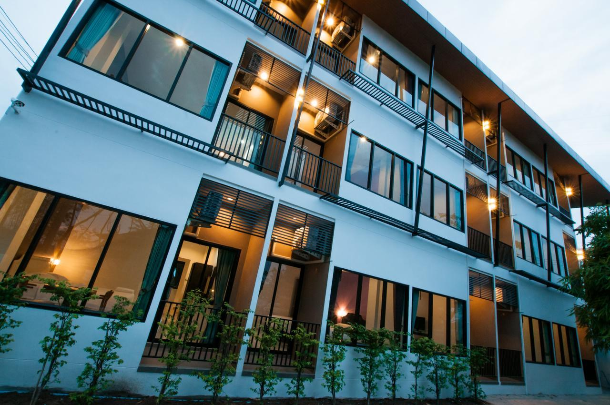
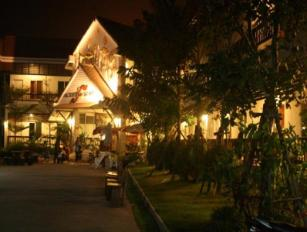
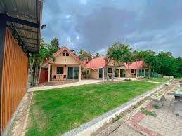
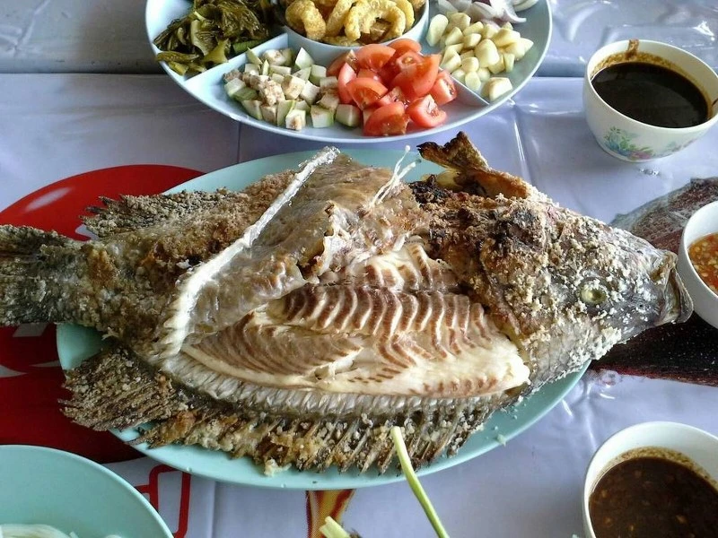

Headers examples
หินสามวาฬ จังหวัดบึงกาฬ หินขนาดใหญ่รูปร่างคล้ายวาฬติดหน้าผาสูงในสถานที่ท่องเที่ยวอันซีนของภูสิงห์ ที่ไม่ว่าใครก็ไม่ควรพลาด
บึงกาฬ จังหวัดขนาดกะทัดรัดแต่มากเสน่ห์แห่งภาคอีสาน ที่ถึงแม้ว่าจะไม่ค่อยได้ยินชื่อสักเท่าไร แต่ก็ใช่ว่าจะไม่มีสิ่งที่น่าสนใจอยู่เสียทีเดียว นอกเหนือจากบึงกาฬจะเป็นจังหวัดที่อยู่เหนือสุดของภาคอีสานแล้ว ยังมีพรมแดนติดกับประเทศเพื่อนบ้านอย่างลาว โดยมีเพียงแม่น้ำโขงกั้น เกิดเป็นสภาพภูมิประเทศที่ดูสวยงามแปลกตา พ่วงด้วยผืนป่าที่อุดมสมบูรณ์ แถมยังมีสถานที่ท่องเที่ยวใหม่อันซีนเด็ด ๆ อย่าง "หินสามวาฬ" ณ ภูสิงห์ เอ้า ! แล้วหินสามวาฬคืออะไร มีรูปร่างหน้าตาแบบไหน วันนี้เราจะไปหาคำตอบพร้อม ๆ กัน
ความพิเศษของหินสามวาฬอยู่ตรงที่เมื่อมองดูจากระยะไกล หินสามก้อนนี้จะดูคล้ายกับฝูงครอบครัววาฬ ที่ประกอบด้วย พ่อวาฬ แม่วาฬ และลูกวาฬ ซึ่งเรียกตามขนาดของหินแต่ละก้อน และยังไม่หมดเพียงเท่านี้ ที่นี่ยังเป็นหนึ่งในจุดชมวิวที่สวยที่สุดในภูสิงห์ โดยเฉพาะอย่างยิ่งช่วงเวลาที่พระอาทิตย์ขึ้น ยิ่งถ้าเป็นช่วงที่พระอาทิตย์กำลังไต่ระดับขึ้นขอบฟ้า เราจะได้เห็นแสงสีส้มที่ไล่เฉดสี ฉายแสงให้เห็นภาพวิวทิวทัศน์ที่อยู่เบื้องหน้า นั่นคือ คุณจะได้เห็นผืนป่าสีเขียวที่อุดมสมบูรณ์ ทัศนียภาพของป่าภูวัว ห้วยบังบาตร แก่งสะดอก หาดทรายแม่น้ำโขงและภูเขาเมืองปากกระดิ่ง ประเทศลาว และถ้ามองดูให้ดี ๆ ไม่แน่ว่าคุณจะเห็นแม่น้ำโขงอยู่ไกลลิบ ๆ
ที่พัก
1.The One Hotel

เริ่มต้นกันด้วยที่พักน่ารักบึงกาฬแห่งแรก ที่มีครบทั้งความสะดวกสบาย และราคาคุ้มค่า กับ The One Hotel โรงแรมยอดนิยม ระดับ 4 ดาว ใครผ่านมาเที่ยวบึงกาฬก็ต้องนึกถึงโรงแรมแห่งนี้เป็นอันดับต้นๆ เพราะนอกจากจะตั้งอยู่ใกล้กับแหล่งท่องเที่ยวสำคัญๆ ในบึงกาฬแล้ว ห้องพักที่นี่ยังน่ามานอนพักผ่อนมากๆ ด้วยการตกแต่งอย่างเรียบหรู มีสิ่งอำนวยความสะดวกอย่างครบครัน ที่สำคัญมีสระว่ายน้ำกล้างแจ้งขนาดใหญ่ไว้ให้บริการด้วยนะคะ เหมาะสำหรับคนที่พาลูกๆ หลานๆ มาด้วย หรือมากันเป็นครอบครัวใหญ่ที่พักน่ารักบึงกาฬแห่งนี้ไม่ทำให้ผิดหวังแน่นอนค่า
2.โรงแรมบีเค เพลส

โรงแรมบีเค เพลส อีกหนึ่งที่พักน่ารักบึงกาฬ ราคามิตรภาพ เหมาะกับการมาพักผ่อนกับครอบครัวเป็นที่สุด ยิ่งมีเด็กเล็กๆ มาด้วยจะยิ่งชอบแน่นอน เพราะที่นี่ไม่ได้มีดีแค่ห้องพักสะอาดๆ ที่เพียบพร้อมไปด้วยความสะดวกาบายเท่านั้นนะคะ แต่ยังมีสวนน้ำพร้อมเครื่องเล่น ไว้ให้เด็กๆ ได้มาเล่นสนุกกันได้อีกด้วย คุณพ่อคุณแม่ที่ตั้งใจจะพาคุณลูกมาเที่ยวบึงกาฬ จองมาพักที่นี่ได้เลยค่ะ มีกิจกรรมสำหรับคุณหนูไว้รองรับมากมาย คุณพ่อคุณจะแม่จะได้พักผ่อนอย่างเต็มที่เลยล่ะค่ะ
3.บ้านพักริมดอยรีสอร์ท

ที่พักต่อไปของเรา เป็นที่พักน่ารักบึงกาฬที่ตั้งอยู่ติดกับริมแม่น้ำโขงเลย บรรยากาศดีสุดๆ ภายในรีสอร์ทร่มรื่น เงียบสงบ ให้ความรู้สึกผ่อนคลาย ผู้เข้าพักจะสามารถนั่งมองพระอาทิตย์ตกลับขอบแม่น้ำโขงได้ ซึ่งเป็นภาพที่หาชมได้ยากจริงๆ ค่ะ ในส่วนของห้องพักก็สะอาดสะอ้าน มีเตียงนอนนุ่มๆ พร้อมสิ่งอำนวยความสะดวกครบครัน ที่สำคัญราคาสบายกระเป๋า จะมากับเพื่อน หรือมากับครอบครัว ก็เลือกห้องพักตามแบบที่ชอบได้เลย รับรองว่าจะประทับใจกลับไปแน่นอนค่ะ
ร้านอาหาร
1.ร้านลมโชยปลาเผา

เร้านอาหารบึงกาฬ ร้านอาหารอีสานขึ้นชื่อของจังหวัดบึงกาฬ ตั้งอยู่ริมโขง บรรยากาศดี มีพื้นที่กว้างขวาง มีลานจอดรถมากมาย ในส่วนของเมนูอาหารก็มีให้เลือกทานหลายอย่าง อาทิ ปลาน้ำโขงลวกจิ้ม ส้มตำ ลาบเป็ด ยำ แต่ที่พลาดไม่ได้เลยก็คือ เมนูปลาเผา ปลาตัวใหญ่ สดๆ เผามาแบบเนื้อชุ่มฉ่ำ หวาน กินกับผัดสด และน้ำจิ้มรสแซ่บที่มีให้เลือกด้วยกัน 3 อย่าง ได้แก่น้ำจิ้มเมี่ยวหวาน น้ำจิ้มเต้าเจี้ยวขิง และน้ำจิ้มซีฟู้ด ฟินสุดๆ
2.โรงแรมบีเค เพลส
โรงแรมบีเค เพลส อีกหนึ่งที่พักน่ารักบึงกาฬ ราคามิตรภาพ เหมาะกับการมาพักผ่อนกับครอบครัวเป็นที่สุด ยิ่งมีเด็กเล็กๆ มาด้วยจะยิ่งชอบแน่นอน เพราะที่นี่ไม่ได้มีดีแค่ห้องพักสะอาดๆ ที่เพียบพร้อมไปด้วยความสะดวกาบายเท่านั้นนะคะ แต่ยังมีสวนน้ำพร้อมเครื่องเล่น ไว้ให้เด็กๆ ได้มาเล่นสนุกกันได้อีกด้วย คุณพ่อคุณแม่ที่ตั้งใจจะพาคุณลูกมาเที่ยวบึงกาฬ จองมาพักที่นี่ได้เลยค่ะ มีกิจกรรมสำหรับคุณหนูไว้รองรับมากมาย คุณพ่อคุณจะแม่จะได้พักผ่อนอย่างเต็มที่เลยล่ะค่ะ
3.บ้านพักริมดอยรีสอร์ท
ที่พักต่อไปของเรา เป็นที่พักน่ารักบึงกาฬที่ตั้งอยู่ติดกับริมแม่น้ำโขงเลย บรรยากาศดีสุดๆ ภายในรีสอร์ทร่มรื่น เงียบสงบ ให้ความรู้สึกผ่อนคลาย ผู้เข้าพักจะสามารถนั่งมองพระอาทิตย์ตกลับขอบแม่น้ำโขงได้ ซึ่งเป็นภาพที่หาชมได้ยากจริงๆ ค่ะ ในส่วนของห้องพักก็สะอาดสะอ้าน มีเตียงนอนนุ่มๆ พร้อมสิ่งอำนวยความสะดวกครบครัน ที่สำคัญราคาสบายกระเป๋า จะมากับเพื่อน หรือมากับครอบครัว ก็เลือกห้องพักตามแบบที่ชอบได้เลย รับรองว่าจะประทับใจกลับไปแน่นอนค่ะ